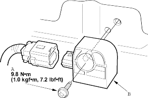

|
 CAUTION
CAUTION- Disconnect the negative battery cable and wait at least 3 minutes before beginning work.
- Slide the front seat forward.
- Remove these items:
- Rear seat-backs
- Rear seat cushion
- Remove the front seat belt lower anchor slide bar (see page 23-2).
- Remove the side trim panel refer to '01 Civic Shop Manual on this CD (see page 20-35).
- Remove the middle cross-member gusset.
- Disconnect the floor wire harness 2P connector from the side impact sensor.
- Remove the Torx bolt (A) using a Torx T30 bit, then remove the side impact sensor (B).

|
Install the side impact sensor in the reverse order of removal, and note these items:
- Replace the Torx bolt with a new one.
- After installing the side impact sensor, confirm proper system operation: Turn the ignition switch ON (II): the SRS indicator light should come on for about 6 seconds and then go off.